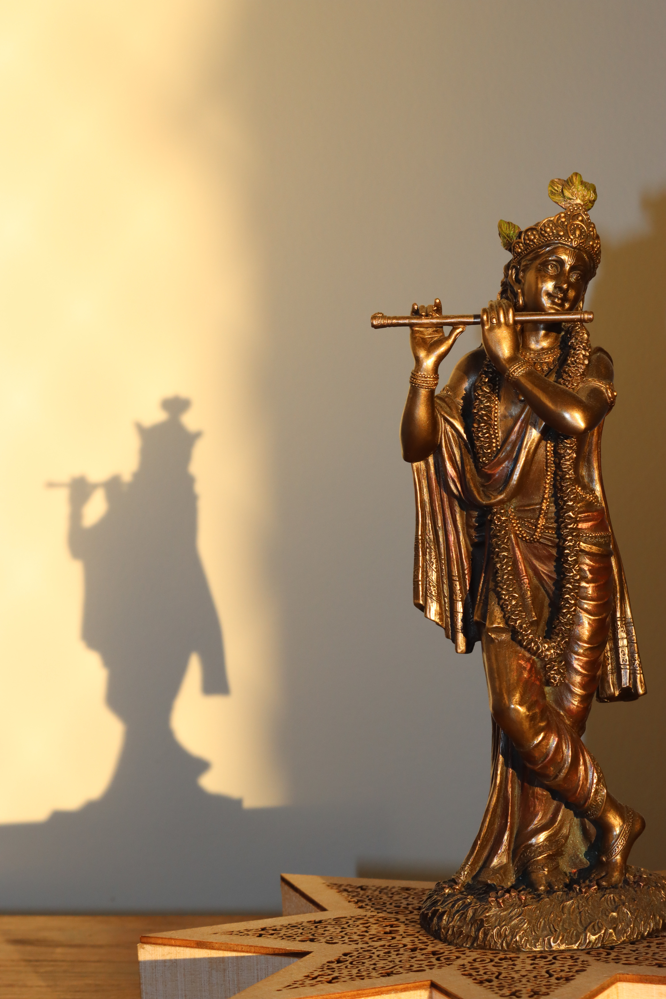

⬅

About Shree Krishna 🙏
Krishna, Sanskrit Kṛṣṇa, one of the most widely revered and most popular of all Indian divinities, worshipped as the eighth incarnation (avatar, or avatara) of the Hindu god Vishnu and also as a supreme god in his own right. Krishna became the focus of numerous bhakti (devotional) cults, which have over the centuries produced a wealth of religious poetry, music, and painting. The basic sources of Krishna’s mythology are the epic Mahabharata and its 5th-century-CE appendix, the Harivamsha, and the Puranas, particularly Books X and XI of the Bhagavata-purana. They relate how Krishna (literally “black,” or “dark as a cloud”) was born into the Yadava clan, the son of Vasudeva and Devaki, who was the sister of Kamsa, the wicked king of Mathura (in modern Uttar Pradesh). Kamsa, hearing a prophecy that he would be destroyed by Devaki’s child, tried to slay her children, but Krishna was smuggled across the Yamuna River to Gokula (or Vraja, modern Gokul), where he was raised by the leader of the cowherds, Nanda, and his wife Yashoda.